Part 10
Settings reference
Every tab in Settings, in the order the app shows them, with what each option does. Settings apply to the whole app, not to one setup.
Opening Settings
Press ⌘,, choose Settings… from the Setup Sheet Helper menu, or click Settings at the top right of the window. Click a tab along the top to switch between them.
Changes take effect as you make them; there's no Save button. When you're done, click Close or press Esc. If you're on one of the import or export screens, Esc first takes you back to the tabs.
General
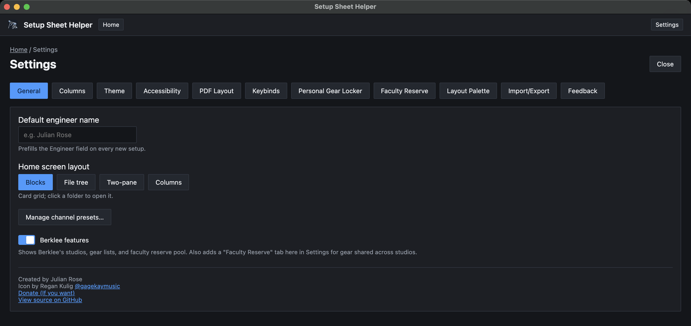
- Default engineer name. Fills in the Engineer field on every new setup. You can still change it per setup.
- Home screen layout. How the home screen shows your studios and setups: Blocks (a card grid), File tree (the whole hierarchy at once), Two-pane (folders on the left, contents on the right) or Columns (cascading panes, like Finder's column view). Part 8 shows each one.
- Manage channel presets…. Opens the preset manager, where you file presets in folders, rename them, add descriptions and delete them. Part 7 covers presets.
- Berklee features. Shows or hides Berklee's studios, gear lists and faculty reserve pool. Turning it off hides them without deleting anything. See Part 9.
The bottom of the tab shows the app's credits and a link to its source code on GitHub.
Columns
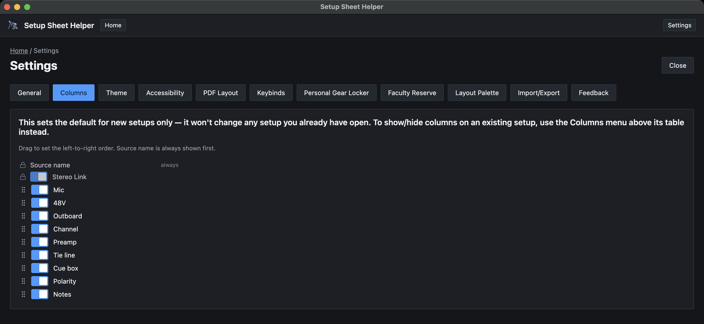
This tab sets the columns that new setups start with. It doesn't change any setup you already have.
- Turn a column's switch off to hide it in new setups.
- Drag a column by its handle to change the left-to-right order.
- Source name is always shown and always first.
- Stereo Link always sits at the far left, but you can switch it off.
To change the columns of a setup that already exists, use the Columns menu above its table. That menu's Reset to my defaults button applies what you set here. Part 7 covers the menu.
Theme
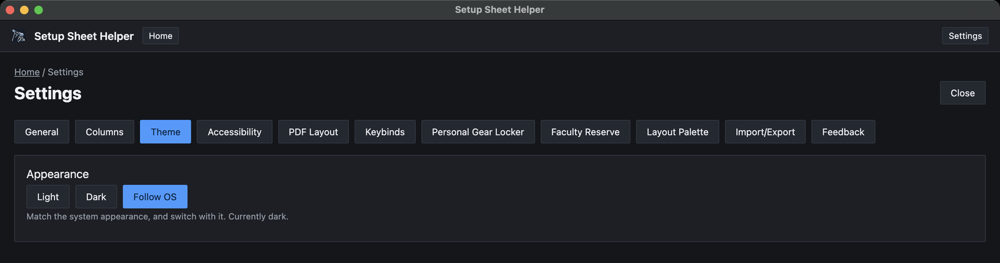
- Light and Dark stay the same whatever macOS is set to.
- Follow OS matches your Mac's appearance and switches when it does. The line underneath tells you which one you're getting right now.
The theme applies to every window, including the pop-out Layout window.
Accessibility
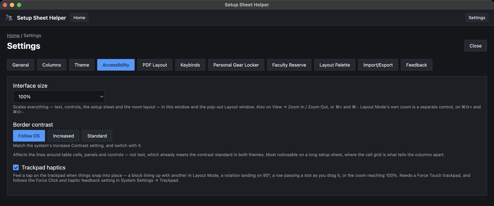
Interface size
Makes everything bigger or smaller: text, controls, the setup sheet and the room layout. Choose from 80% to 200%. It applies to the main window and the pop-out Layout window.
You can also use View → Zoom In (⌘=), View → Zoom Out (⌘-) and View → Actual Size (⌘0). These are separate from Layout Mode's own zoom, which uses ⌘⇧= and ⌘⇧- and only zooms the floor plan.
Border contrast
Controls how strong the lines around table cells, panels and controls are. Text isn't affected; it's already high contrast in both themes. Stronger borders help most on a long setup sheet, where the grid is what tells the columns apart.
- Follow OS matches the Increase contrast setting in macOS System Settings → Accessibility.
- Increased always draws stronger borders.
- Standard always uses the normal borders.
Trackpad haptics
Gives a light tap on the trackpad when something snaps into place: a block lining up with another in Layout Mode, a rotation landing on a snap angle, a row passing a slot as you drag it, or the zoom reaching 100%. This option only appears on Macs with a Force Touch trackpad. It also follows the Force Click and haptic feedback setting in System Settings → Trackpad.
Using the app from the keyboard
These work everywhere, with nothing to turn on:
- Whatever has keyboard focus gets a visible ring, so you can always see where Tab has taken you.
- Anything you can reorder by dragging can also be reordered from the keyboard. That includes setup sheet rows, the column lists, items in the Manage dialogs and the Layout Palette lists. Tab to the item's drag handle, press Space or Return to pick it up, use the arrow keys to move it, and press Space or Return again to drop it. Esc cancels the move.
PDF Layout
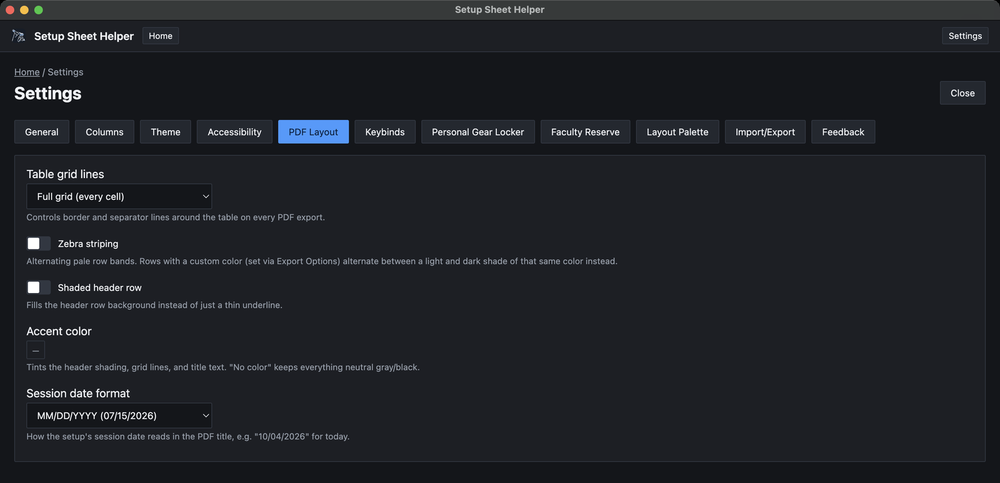
These settings style the setup sheet table on every PDF you export. Set them once and every export uses them. Part 3 shows how they look.
- Table grid lines. None (header underline only), Full grid (every cell), Row lines only or Outer border only.
- Zebra striping. Alternating pale bands on the rows. Rows you've colored alternate between a light and a dark shade of their own color instead.
- Shaded header row. Fills the header row with a background, instead of a thin line under it.
- Accent color. Tints the header shading, grid lines and title text. No color keeps everything neutral gray and black.
- Session date format. How the session date reads in the PDF title: MM/DD/YYYY, Month D, YYYY, YYYY-MM-DD or DD/MM/YYYY. Each choice shows an example date, and the line underneath shows today's date in the format you picked.
Keybinds
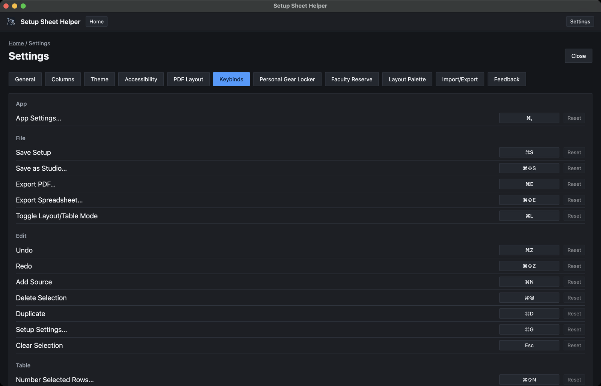
Every keyboard shortcut in the app can be changed here. Actions are grouped as App, File, Edit, Table, Layout and Markup. For the full list of defaults, see Part 12.
Changing a shortcut
-
Click the shortcut. Click the button showing the action's current shortcut. It changes to Press a key….
-
Press the new keys. Hold the modifier keys and press the key, for example ⌘⇧P. The new shortcut is saved straight away.
To back out without changing anything, press Esc while it says Press a key…, or click somewhere else.
- Modifier keys. Most shortcuts need at least one modifier (⌘, ⇧ or ⌥) so they can't clash with typing. If you press a bare key, the app explains why it wasn't accepted. A few actions are meant to be a single key and accept one: Clear Selection (Esc), the two Delete actions (Delete), and the Markup tool letters.
- Reset. Each action has its own Reset button, which puts back its default. It's grayed out until you've changed that shortcut.
- Conflicts. If two actions that can fire in the same place share a shortcut, both show a warning reading Also used by followed by the other action's name. Change one of them to clear it.
- Reset all to defaults. The button at the bottom puts every shortcut back the way it shipped.
- Not set. Some actions have no shortcut to begin with, such as Toggle Snapping and Show/Hide Markup in the Layout group. Their button reads Not set. Click it to give the action a shortcut.
The Markup group
The Markup group holds the single-letter keys for the drawing tools: Select and Move (V), Pen (P), Highlighter (H), Line (L), Arrow (A), Ellipse (O), Box (R) and Eraser (E). They only work while markup mode is on, so they don't get in the way anywhere else. Part 5 covers the tools.
If your drawing tablet's driver sends one of these letters from a pen or tablet button, rebind the tool here instead of fighting the driver.
A few keys are fixed and don't appear here: ⌘A for Select All, the arrow keys for nudging blocks, and Space-drag for panning the floor plan.
Personal Gear Locker
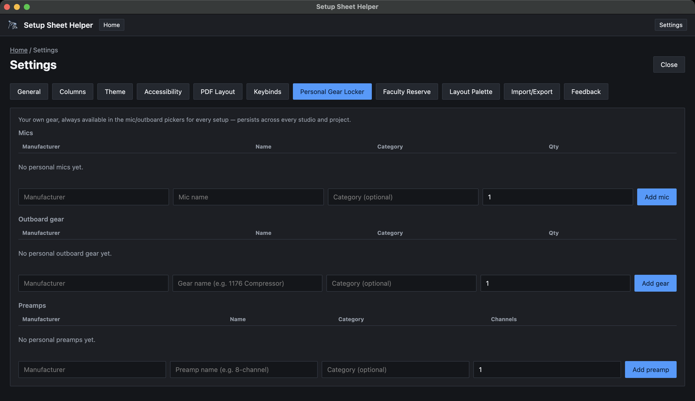
Your own gear: the mics, outboard and preamps you bring to sessions. Everything here shows up in the gear pickers of every setup, in every studio, under a Personal Gear Locker group.
-
Fill in the row at the bottom of a section
Type the manufacturer and the model name. The boxes suggest names as you type, and if you leave the manufacturer blank the app guesses it from the model. The category is optional.
-
Set how many you have
Mics and outboard take a quantity. Preamps take a number of channels instead.
-
Add it
Click Add mic, Add gear or Add preamp.
Once something is in the list, you can change its manufacturer, name and quantity in place, or click Remove. Picking personal gear on a row adds [Personal Gear Locker] to that row's Notes.
Borrowing something for one session only? Add it as Session Gear in that setup's Setup settings (⌘G) instead, so it doesn't follow you into every other setup. Part 7 explains Session Gear.
Faculty Reserve
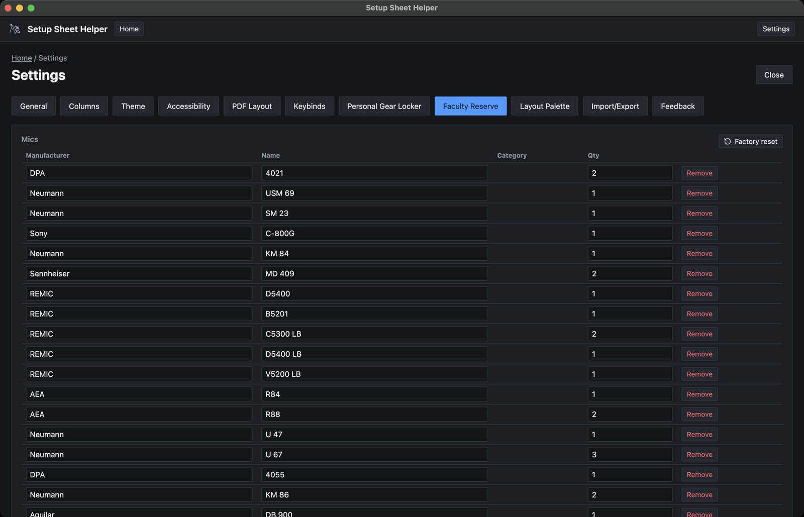
This tab only appears when Berklee features is on in the General tab. It holds Berklee's faculty pool, in three sections: Mics, Outboard gear and Preamps. A setup only offers this gear when its own faculty reserve switch is on. Part 9 explains how that works.
- Change a manufacturer, name or quantity in place.
- Click Remove to take an item out of the pool.
- Add items with the row at the bottom of each section, the same way as the Personal Gear Locker.
- Factory reset replaces every faculty reserve mic, including any you've added or edited, with Berklee's original set. Outboard gear and preamps aren't affected. It can't be undone, so the app asks you to confirm.
Layout Palette
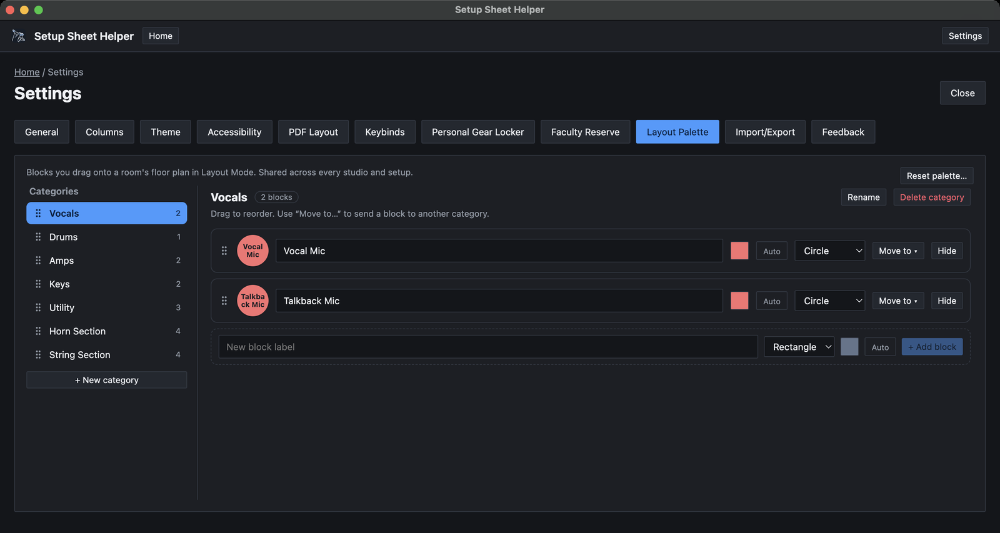
The palette is the set of blocks you drag onto a floor plan in Layout Mode. There's one palette, shared by every studio and setup. You can also get here from the Manage palette… button in Layout Mode's palette. Changes apply straight away. Part 4 covers placing blocks.
Categories
Categories are listed on the left, with the number of blocks in each. Click one to see its blocks on the right.
- Reorder by dragging a category by its handle.
- Add one with + New category. Type a name and press Return.
- Rename the selected category with the Rename button above its blocks.
- Delete it with Delete category. Custom blocks in it are removed for good. Built-in blocks are hidden instead, so you can restore them later.
Blocks
Each block in the selected category has a row of controls:
- Drag handle. Drag to change the block's place in the list.
- Label. The text printed on the block.
- Color. The block's fill.
- Default text color. Auto picks black or white for you, so the label stays readable on the fill. You can choose a color instead.
- Shape. Rectangle or Circle.
- Move to. Sends the block to another category.
- Hide or Remove. Built-in blocks can only be hidden. Blocks you made yourself are removed.
To add a block, fill in the row under the list: type a label in New block label, choose the shape, color and text color, then click + Add block.
Restoring hidden blocks
Once you've hidden a built-in block, a Hidden built-ins entry appears at the bottom of the category list. Click it, then click Restore next to a block to put it back in its category.
Resetting the palette
Reset palette… at the top right puts every block back the way it ships: original colors, shapes, categories and order, with hidden built-ins restored. Any custom blocks are deleted. This can't be undone, so the app asks you to confirm.
None of this changes floor plans you've already made. A block on a plan keeps its own label, shape and color, whatever you later do to the palette.
Import/Export
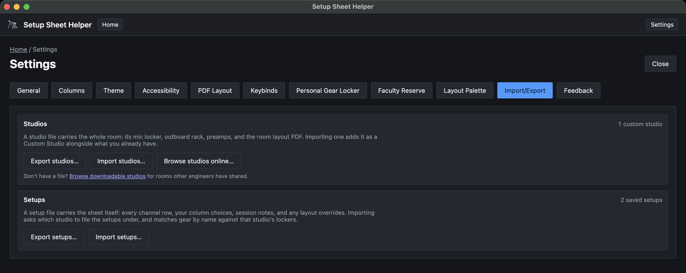
This tab moves studios and setups in and out of the app as files.
- Studios. Export studios…, Import studios… and Browse studios online…. A studio file carries the whole room: its mics, outboard, preamps and room layout.
- Setups. Export setups… and Import setups…. A setup file carries the sheet itself: rows, column choices, session notes and layout overrides.
The count at the right of each section shows how many custom studios and saved setups you have. Part 11 walks through every step.
Feedback
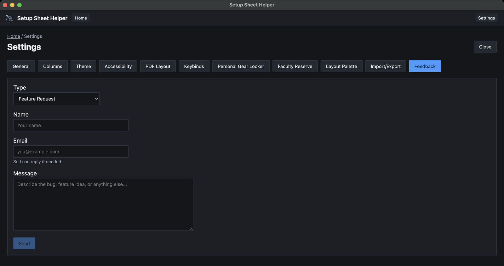
Send a feature idea, bug report or anything else straight to the developer.
-
Choose a type
Feature Request, Bug Report or Other.
-
Fill in every field
Name, Email and Message are all required. The email address is there so the developer can reply to you.
-
Click Send
A thank-you line appears under the button once it has gone through.
Sending needs an internet connection. If it fails, the app shows what went wrong and keeps your message in the form, so you can try again once you're back online.